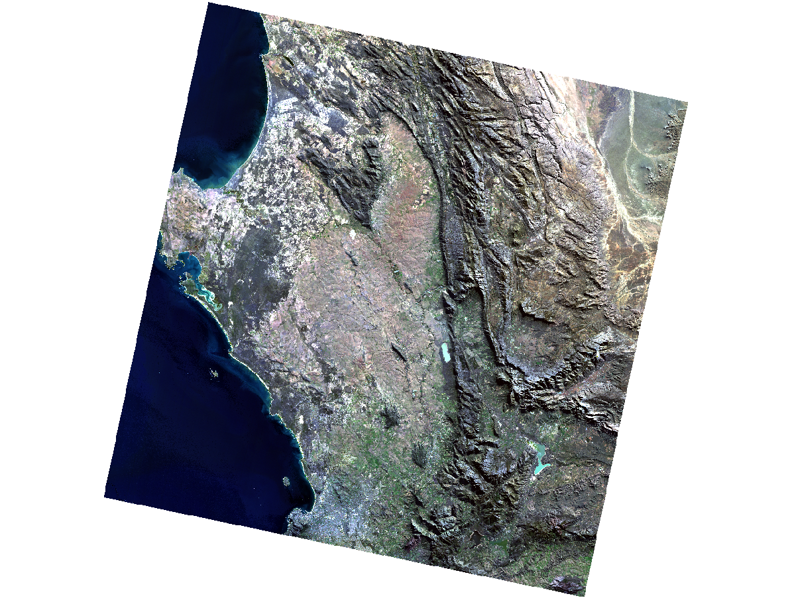
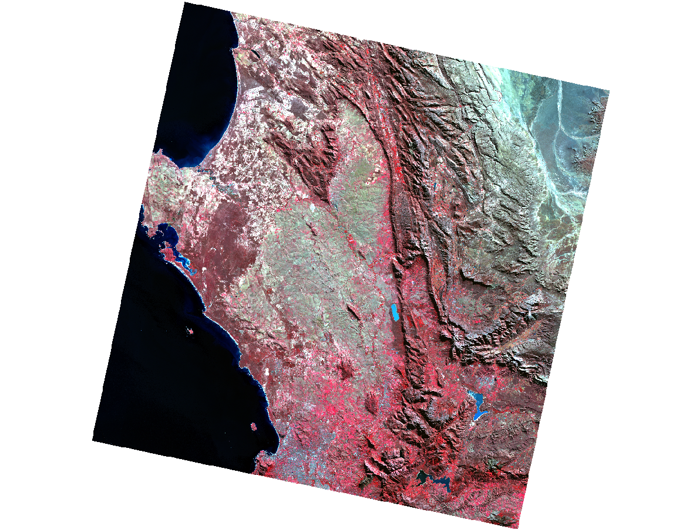
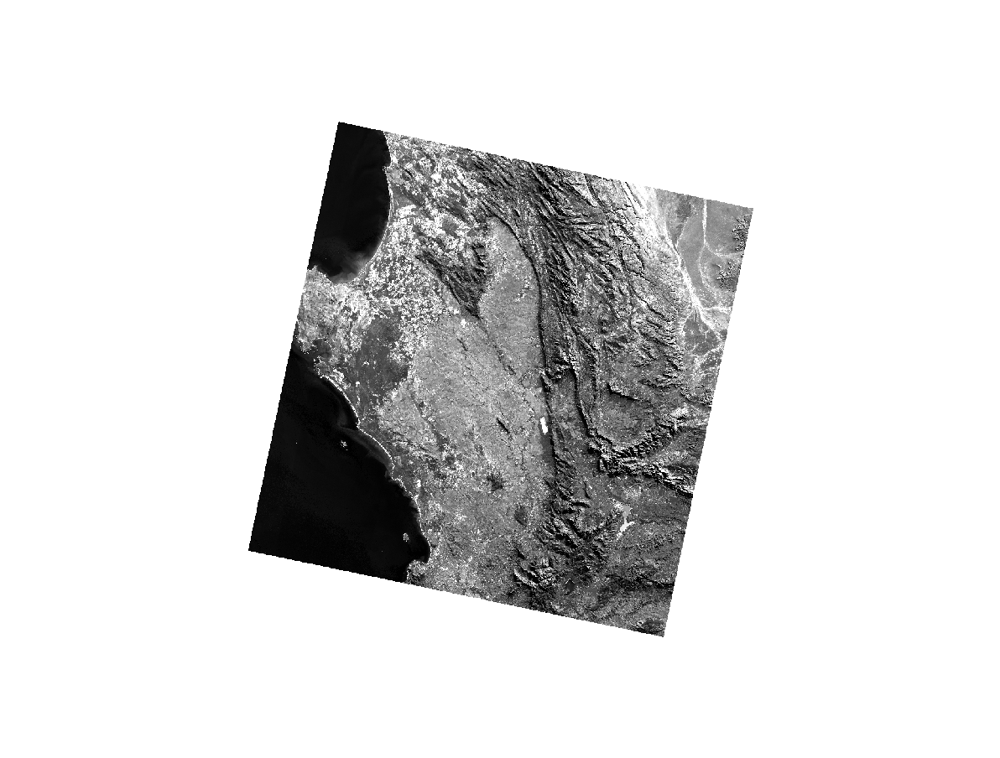

Week 1
Week 1
Summary
This week introduced satellite remote sensing through Sentinel-2 and Landsat 8/9 data, explored in SNAP and QGIS over Cape Town, South Africa. The practical covered loading multi-spectral imagery, creating colour composites, resampling to a common resolution, masking to a study area boundary, and computing the Tasseled Cap transformation. Figures 1–3 show outputs from the Landsat 9 scene; the true colour composite (B4-B3-B2) renders the scene as the eye would see it, with the Atlantic to the west, the Cape Fold Mountains running north-south, and the Cape Flats urban area to the centre-left. The false colour composite (B5-B4-B3) reassigns NIR to the red gun, making actively photosynthesising vegetation unambiguous — areas visually similar in true colour become immediately distinguishable. Band 3 alone (Figure 3) illustrates that a composite is simply three independent greyscale rasters assigned to colour guns; there is no inherent colour in the data.


Figures 4–6 show the Tasseled Cap feature space computed in SNAP. The Greenness vs Brightness plot (Figure 4) shows the characteristic wedge — a soil line extending toward higher brightness with a separate arm of vegetated pixels. Brightness vs Wetness (Figure 5) shows most pixels at negative wetness values, consistent with the dry impervious and rocky surfaces dominant in this winter scene. The Greenness vs Wetness plot (Figure 6) is more diffuse, reflecting sparse, seasonally dry vegetation cover. Together they demonstrate the transformation’s core value: compressing six raw bands into three physically interpretable dimensions — soil, vegetation and moisture — that Jensen (2016, p. 23) describes as capturing the majority of meaningful spectral variance within a scene.


A key limitation of Landsat is its 30m spatial resolution — sufficient for regional analysis but coarse for dense urban environments where a single pixel commonly mixes road, rooftop, vegetation and shadow. Sentinel-2 partially addresses this with 10m visible and NIR bands, but lacks a thermal infrared band entirely, making Landsat the only free option for land surface temperature retrieval. A broader limitation shared by both is their passive nature — cloud cover and darkness render optical imagery unusable precisely when monitoring is most needed. Active SAR sensors overcome this constraint, suggesting that future analytical workflows will increasingly combine optical and SAR data rather than relying on either in isolation.
Applications
The Tasseled Cap transformation, introduced by Crist (1985) for Landsat Thematic Mapper data, established the principle that multi-spectral imagery could be rotated into a physically meaningful feature space rather than analysed band by band. Building on this, Zha, Gao and Ni (2003) developed the Normalised Difference Built-up Index (NDBI) from Landsat TM, demonstrating that the contrast between shortwave infrared and NIR reflectance reliably separates impervious surfaces from other land covers — achieving 92.6% accuracy in mapping urban land in Nanjing. The significance of this is not the index itself but what it implies: that domain knowledge about the spectral behaviour of surface materials can substitute, at least partially, for the spatial resolution needed to resolve individual features. As Jensen (2016, pp. 1–18) notes, the fundamental challenge in remote sensing is extracting thematic information from radiometric measurements, and band ratios represent one of the most durable solutions to that challenge because they are physically grounded rather than statistically derived.
However, the limits of this strategy are real. Herold, Couclelis and Clarke (2005) showed that the spatial heterogeneity of urban environments — where land cover changes at scales well below 30m — creates structural ambiguity that spectral indices cannot fully resolve. Higher resolution sensors like Sentinel-2 reduce but do not eliminate this problem, since finer pixels also capture greater within-class spectral variability, making classification harder rather than easier in some contexts. What emerges from reading these studies alongside each other is that resolution improvements and spectral indices are complementary strategies, not alternatives — and that neither removes the need for careful validation. This directly contextualises the Tasseled Cap outputs from this week’s practical: the scatterplots characterise the broad spectral structure of the Cape Town scene, but translating them into a reliable land cover map would require additional steps the practical did not reach.
Reflections
The most useful outcome of this week was not the software outputs but the underlying framework: that every pixel in a satellite image is a vector of reflectance values in spectral space, and that the structure of that space encodes information about what is on the ground. SNAP as a tool was frustrating — poorly documented at the critical steps and designed for a specialist audience — but the conceptual shift from thinking about images as pictures to thinking about them as spectral data structures is genuinely transferable to any future work involving land cover analysis or change detection. The broader question this raises is where remote sensing sits relative to other urban data sources: satellite imagery offers spatial coverage and temporal consistency that no ground-based survey can match, but its thematic resolution remains coarse. As cloud computing platforms like GEE make pre-processed imagery increasingly accessible, the skills that will matter most are arguably not software-specific processing steps but the ability to critically interpret what spectral data can and cannot tell us about the urban environment.
References
Crist, E.P. (1985) “A TM tasseled cap equivalent transformation for reflectance factor data,” Remote Sensing of Environment, 17(3), pp. 301–306. Available at: https://doi.org/10.1016/0034-4257(85)90102-6.
Herold, M., Couclelis, H. and Clarke, K.C. (2005) “The role of spatial metrics in the analysis and modeling of urban land use change,” Computers, Environment and Urban Systems, 29(4), pp. 369–399. Available at: https://doi.org/10.1016/j.compenvurbsys.2003.12.001.
Jensen, J.R. (2016) Introductory digital image processing: A remote sensing perspective. Fourth edition. Glenview, Ill: Pearson Education (Pearson series in geographic information science).
Zha, Y., Gao, J. and Ni, S. (2003) “Use of normalized difference built-up index in automatically mapping urban areas from TM imagery,” International Journal of Remote Sensing, 24(3), pp. 583–594. Available at: https://doi.org/10.1080/01431160304987.